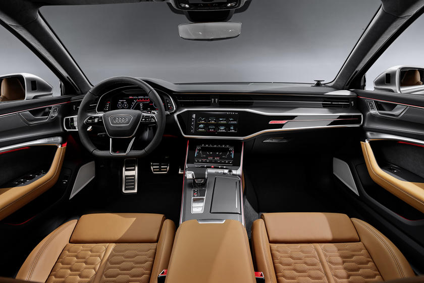

Audi endows the RS6 Avant with a twin-turbocharged 4.0-liter V-8, which generates 591 horsepower and 590 pound-feet of torque. The powerplant combines with a 48-volt hybrid system that's found on other Audi products, such as the A8 luxury sedan and the Q8 crossover. The RS6 Avant feeds its standard Quattro all-wheel drive through an eight-speed automatic transmission. The combination helped rocket our 5031-pound test car to 60 mph in 3.1 seconds and complete the quarter-mile in 11.5 ticks at 120 mph. But those numbers don't accurately demonstrate the wagon's glorious ability to increase our heart rates and tingle our ear drums with its breakneck acceleration and badass soundtrack. Rolling on a set of 22-inch wheels with summer performance rubber and buoyed by a sport-tuned air suspension with adaptive dampers, our Tango Red RS6 Avant was able to deliver a relaxed or rollicking ride depending on the selected drive mode. The longroof Audi also felt extremely agile thanks to its four-wheel steering and torque-vectoring rear differential. Ours stopped from 70 mph in a tidy 160 feet with the standard brakes. A set of front and rear carbon-ceramic stoppers are available for a sizable sum, and the upgrade unlocks a higher top speed of 190 mph.
Inside, the RS6 Avant showcases a sophisticated design and cutting-edge technology. The driver faces a 12.3-inch digital gauge cluster, and the dashboard features a pair of large touchscreens between the front passengers. The rest of the cabin is covered in leather and accentuated with racy materials. The RS6 Avant has a roster of upscale standard features, including heated and ventilated front seats, four-zone climate control, a panoramic sunroof, and wireless phone charging. Buyers can order a head-up display, massaging front seats, richer leather, and heated rear seats for more coin. The wagon has 30 cubic feet of cargo room behind the rear seats too. A power rear liftgate comes standard; a motion-activated one is optional.
